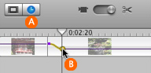

Fading audio up or down
You can make sound fade up or down within an individual audio or video clip. For example, you can turn down the volume of a music track when someone in a video track begins to speak, or boost the volume of someone's speech if the recorded volume level is too low.

To fade audio up or down:
- Click the Timeline Viewer button (A, shown above).
- Choose View > Show Clip Volume Levels.
- Click a point on the volume level bar where you want the volume to change, then drag the marker (B, shown above) up or down to adjust the volume.
- To specify where and how gradually you want the volume change to occur, drag the square marker (shown below) in any direction.
- If necessary, repeat these steps where you want to bring the audio back up or down. You can click the volume level bar multiple times to adjust volume up and down at multiple points during a clip.
A volume level bar appears in each clip in the timeline viewer.
You can see the percentage you've raised or lowered the volume of a clip in the clip volume field at the bottom edge of the iMovie window.
To remove a volume marker, select it and choose Edit > Clear.
Tip: When fading audio up or down, it's a good idea to zoom in on the timeline viewer. To learn how, see "Showing more detail in the timeline viewer" below.
Tip: You may find it useful to adjust the volume as the movie plays. If you adjust a marker during playback of a clip, the movie pauses and then begins playing again at the point where you made the adjustment. You can continue to adjust the sound until it's the way you want.
Related Topics
Showing more detail in the timeline viewer
Making your movie louder or softer
 Was this page helpful? Send feedback.
Was this page helpful? Send feedback.